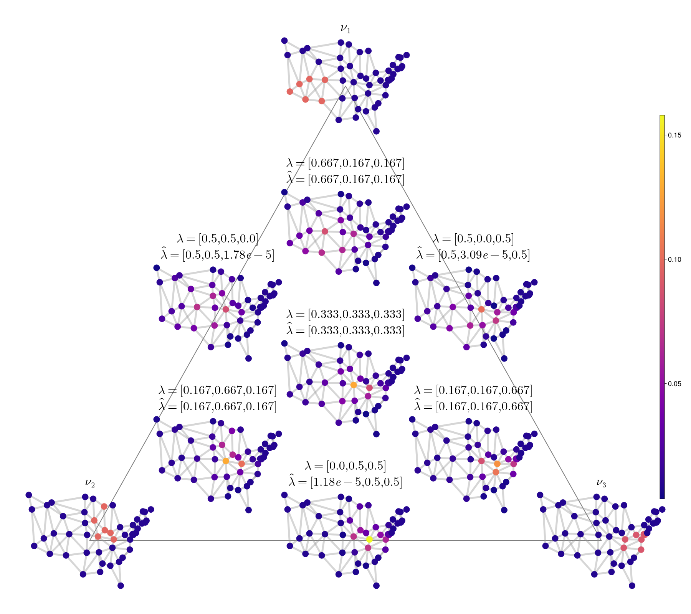

GraphTransportation.jl
A Julia package for discrete transport geometry on graphs, implementing the framework of Erbar, Rumpf, Schmitzer, and Simon — Computation of optimal transport on discrete metric measure spaces.
Overview
Given a graph encoded as a Markov transition matrix Q, this package computes:
- Geodesics between probability measures on the graph via a Galerkin-discretised Chambolle-Pock primal-dual algorithm
- Discrete transport barycenters (Fréchet means) via gradient descent
- Barycentric coordinate recovery by solving a quadratic programme on the Gram matrix of logarithmic maps
- Entropic optimal transport barycenters via the Sinkhorn algorithm, with simplex-regression-based coordinate recovery
Quick start
using GraphTransportation
# Two-point graph
Q = [0.0 1.0; 1.0 0.0]
# Two Dirac masses
μ = [2.0, 0.0]
ν = [0.0, 2.0]
# Discrete transport geodesic and cost
geo = discrete_transport(Q, μ, ν)
dist = transport_cost(Q, μ, ν)
# Barycenter of μ and ν with weights (0.75, 0.25)
M = hcat(μ, ν)
bary = barycenter(M, [0.75, 0.25], Q)
# Recover barycentric coordinates
coords = analysis(bary, M, Q)Graph constructors
Several standard graphs are provided in CommonGraphs.jl:
| Function | Graph |
|---|---|
triangle_markov_chain() | 3-cycle |
square_markov_chain() | 4-cycle |
cube_markov_chain() | 3-cube (8 nodes) |
hypercube_markov_chain() | 4-cube (16 nodes) |
grid_markov_chain(n) | n×n grid |
triangular_prism_markov_chain() | triangular prism (6 nodes) |
ma_house_markov_chain() | MA state house district adjacency |
Each returns (Q, π) where Q is the row-stochastic transition matrix and π is the stationary distribution.
Barycentric coding model
The figure below shows the Barycentric Coding Model (BCM) on the 49-node USA contiguous-states graph. Each sub-graph is a discrete transport barycenter whose position in the triangle reflects its recovered barycentric coordinates with respect to three reference measures (corners).

API reference
See the Examples page for runnable experiment scripts, and the API Reference page for full documentation of all exported functions.